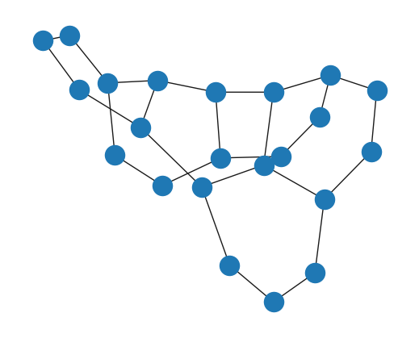

# 导入工具包
import networkx as nx
import seaborn as sns
import pandas as pd
import numpy as np
import random
import matplotlib.pyplot as plt
%matplotlib inline
sns.set(style='white')
sns.set_palette(['#046586', '#28A9A1', '#C9A77C', '#F4A016', '#F6BBC6', '#E71F19']) # Nature 配色
# %matplotlib inline
# %config InlineBackend.figure_format = 'svg'
plt.rcParams['figure.figsize'] = (5, 4) # 2.24, 2.24 设置figure_size尺寸
plt.rcParams['savefig.dpi'] = 300 # 图片像素
plt.rcParams['figure.dpi'] = 100 # 分辨率
plt.rcParams['font.sans-serif'] = 'SimHei' # 显示中文
# plt.rcParams['font.sans-serif'] = 'Times New Roman' # 论文插图用
# 设置正常显示字符
plt.rcParams['axes.unicode_minus'] = False #正常显示负号
# plt.rcParams['font.size'] = 60
经典图结构#
环状图#
G = nx.cycle_graph(5)
nx.draw(G)
梯状图#
G = nx.ladder_graph(5)
nx.draw(G)
线性串珠图#
G = nx.path_graph(15)
nx.draw(G)
星状图#
G = nx.star_graph(7)
nx.draw(G)
轮辐图#
G = nx.wheel_graph(7)
nx.draw(G)
二项树#
G = nx.binomial_tree(5)
nx.draw(G)
栅格图#
二维矩形网格图#
G = nx.grid_2d_graph(3, 5)
nx.draw(G)
多维矩形网格图#
G = nx.grid_graph(dim=(2, 3, 4))
nx.draw(G)

二维三角形网格图#
G = nx.triangular_lattice_graph(2, 5)
nx.draw(G)
二维六边形蜂窝图#
G = nx.hexagonal_lattice_graph(2, 3)
nx.draw(G)

n维超立方体图#
G = nx.hypercube_graph(4)
nx.draw(G)
NetworkX内置图#
G = nx.diamond_graph() ## 钻石图
nx.draw(G)
G = nx.bull_graph() ## 牛角图
nx.draw(G)
G = nx.frucht_graph()
nx.draw(G)
G = nx.house_graph()
nx.draw(G)
G = nx.house_x_graph()
nx.draw(G)
G = nx.petersen_graph()
nx.draw(G)
G = nx.krackhardt_kite_graph()
nx.draw(G)
随机图#
G = nx.erdos_renyi_graph(10, 0.5)
nx.draw(G)
社交网络#
# 空手道俱乐部数据集
G = nx.karate_club_graph()
nx.draw(G, with_labels=True)
G.nodes[5]['club']
'Mr. Hi'
G.nodes[9]['club']
'Officer'
# 雨果《悲惨世界》人物关系
G = nx.les_miserables_graph()
plt.figure(figsize=(12, 10))
pos = nx.spring_layout(G, seed=10)
nx.draw(G, pos, with_labels=True)
# Florentine families graph
G = nx.florentine_families_graph()
nx.draw(G, with_labels=True)

社群聚类图#
G = nx.caveman_graph(4, 3)
nx.draw(G, with_labels=True)
树#
tree = nx.random_tree(n=10, seed=8)
print(nx.forest_str(tree, sources=[6])) ## source是根？
╙── 6
├── 5
│ └── 7
└── 2
├── 1
│ └── 0
│ └── 3
│ ├── 4
│ └── 8
└── 9
导入三元组连接表#
# 导入csv文件定义的三元组连接表，构建有向图
df = pd.read_csv(r'./data/triples.csv')
df
| head | tail | relation | label | |
|---|---|---|---|---|
| 0 | 关羽 | 刘备 | younger_sworn_brother | 义弟 |
| 1 | 张飞 | 刘备 | younger_sworn_brother | 义弟 |
| 2 | 关羽 | 张飞 | elder_sworn_brother | 义兄 |
| 3 | 张苞 | 张飞 | son | 儿子 |
| 4 | 关兴 | 关羽 | son | 儿子 |
| ... | ... | ... | ... | ... |
| 148 | 曹植 | 曹丕 | younger_brother | 弟弟 |
| 149 | 马谡 | 诸葛亮 | colleague | 同事 |
| 150 | 马谡 | 刘备 | minister | 臣 |
| 151 | 孙坚 | 孙权 | father | 父亲 |
| 152 | 吴国太 | 孙权 | mother | 母亲 |
153 rows × 4 columns
通过连接表Edge List创建图#
G = nx.DiGraph()
edges = [edge for edge in zip(df['head'], df['tail'])]
G.add_edges_from(edges)
G.edges('关羽')
OutEdgeDataView([('关羽', '刘备'), ('关羽', '张飞')])
可视化#
# 结点排版布局-默认弹簧布局
pos = nx.spring_layout(G, seed=123)
plt.figure(figsize=(15, 15))
nx.draw(G, pos, with_labels=True)
查看全图参数#
print(G)
DiGraph with 123 nodes and 144 edges
len(G)
123
G.size()
144
G.nodes
NodeView(('关羽', '刘备', '张飞', '张苞', '关兴', '关平', '卢植', '公孙瓒', '甘氏', '刘禅', '诸葛瞻', '诸葛亮', '姜维', '黄月英', '黄承彦', '诸葛瑾', '公孙越', '马超', '马腾', '韩遂', '徐庶', '曹操', '刘胜', '刘启', '刘辩', '孙权', '孙尚香', '糜氏', '糜芳', '糜竺', '魏延', '赵云', '黄忠', '庞统', '法正', '蒋琬', '马良', '孟获', '沙摩柯', '庞德公', '马谡', '祝融', '孙韶', '孙策', '孙氏', '陆逊', '刘协', '董卓', '王允', '貂蝉', '吕布', '丁原', '高顺', '陈宫', '张辽', '刘表', '蔡氏', '蔡瑁', '蒯越', '黄祖', '文聘', '张宝', '张角', '张梁', '袁绍', '袁术', '袁谭', '袁熙', '袁尚', '吴国太', '孙坚', '大乔', '小乔', '周瑜', '丁奉', '徐盛', '鲁肃', '张昭', '蒋钦', '太史慈', '周泰', '凌统', '吕蒙', '甘宁', '黄盖', '韩当', '程普', '曹嵩', '吕伯奢', '邹氏', '张绣', '清河公主', '夏侯楙', '夏侯渊', '夏侯淳', '曹真', '曹爽', '郭嘉', '徐晃', '乐进', '张郃', '许褚', '典韦', '荀彧', '荀攸', '贾诩', '司马懿', '程昱', '于禁', '邓艾', '钟会', '庞德', '司马师', '司马昭', '司马炎', '曹仁', '曹纯', '曹昂', '刘氏', '超昂', '卞氏', '曹丕', '曹植'))
### 保存并载入邻接表Adjacency List
for line in nx.generate_adjlist(G):
print(line)
关羽 刘备 张飞
刘备 诸葛亮 马超 徐庶 姜维 糜芳 糜竺 魏延 赵云 黄忠 庞统 法正 蒋琬 马良 孟获 沙摩柯
张飞 刘备
张苞 张飞
关兴 关羽
关平 张苞 关羽
卢植 刘备
公孙瓒 刘备
甘氏 刘备
刘禅 甘氏
诸葛瞻 刘禅 诸葛亮
诸葛亮 姜维
姜维 诸葛亮
黄月英 诸葛亮
黄承彦 黄月英
诸葛瑾 诸葛亮
公孙越 公孙瓒
马超
马腾 马超
韩遂 马腾
徐庶
曹操 徐庶 张辽 蒯越 蔡瑁 张绣 夏侯淳 夏侯渊 曹真 郭嘉 徐晃 乐进 张郃 许褚 典韦 荀彧 荀攸 贾诩 司马懿 程昱 于禁 邓艾 钟会 庞德
刘胜 刘启
刘启
刘辩 刘启
孙权 诸葛瑾 孙策 周瑜 陆逊 丁奉 徐盛 鲁肃 张昭 蒋钦 太史慈 周泰 凌统 吕蒙 甘宁 黄盖 韩当 程普
孙尚香 刘备 吴国太
糜氏 刘备
糜芳 糜氏
糜竺 糜芳
魏延
赵云
黄忠
庞统
法正
蒋琬
马良
孟获
沙摩柯
庞德公 庞统
马谡 马良 诸葛亮 刘备
祝融 孟获
孙韶 孙策
孙策 孙坚
孙氏 陆逊 孙策
陆逊
刘协 刘辩
董卓 刘协 吕布
王允 刘协
貂蝉 王允 吕布
吕布 高顺 陈宫 张辽
丁原 吕布
高顺
陈宫
张辽
刘表 刘协 黄祖 文聘
蔡氏 刘表
蔡瑁 蔡氏
蒯越 蔡瑁
黄祖
文聘
张宝 张角
张角
张梁 张宝
袁绍 刘协
袁术 袁绍
袁谭 袁绍
袁熙 袁谭
袁尚 袁熙
吴国太 孙坚 孙权
孙坚 孙权
大乔 孙策 陆逊
小乔 大乔
周瑜 小乔
丁奉
徐盛
鲁肃
张昭
蒋钦
太史慈
周泰
凌统
吕蒙
甘宁
黄盖
韩当
程普
曹嵩 曹操
吕伯奢 曹嵩
邹氏 曹操 张绣
张绣
清河公主 曹操
夏侯楙 清河公主
夏侯渊 夏侯楙 夏侯淳
夏侯淳
曹真
曹爽 曹真
郭嘉
徐晃
乐进
张郃
许褚
典韦
荀彧 荀攸
荀攸
贾诩
司马懿
程昱
于禁
邓艾
钟会
庞德
司马师 司马懿
司马昭 司马师 司马懿
司马炎 司马昭
曹仁 曹操
曹纯 曹仁
曹昂 曹操
刘氏 曹操
超昂 刘氏
卞氏 曹操
曹丕 卞氏
曹植 曹丕
# 将邻接表导出为本地文件 grid.edgelist
nx.write_edgelist(G, path=r'data/grid.edgelist', delimiter=":")
# 从本地文件 grid.edgelist 读取邻接表
H = nx.read_edgelist(path=r'data/grid.edgelist', delimiter=":")
# 可视化
plt.figure(figsize=(15, 14))
pos = nx.spring_layout(H, iterations=3, seed=5)
nx.draw(H, pos, with_labels=True)
plt.show()
创建结点#
import networkx as nx
创建无结点，无连接的空图#
G = nx.Graph()
G
<networkx.classes.graph.Graph at 0x216bf14d700>
G.nodes
NodeView(())
# 可视化
nx.draw(G) ## 可以看到是空的
添加单个结点#
G.add_node('刘备')
G.nodes
NodeView(('刘备',))
G.add_node('Tommy')
G.nodes
NodeView(('刘备', 'Tommy'))
G.add_node(1)
G.nodes
NodeView(('刘备', 'Tommy', 1))
### 添加多个结点
G.add_nodes_from(['诸葛亮', '曹操'])
G.nodes
NodeView(('刘备', 'Tommy', 1, '诸葛亮', '曹操'))
G.add_nodes_from(range(100,105))
G.nodes
NodeView(('刘备', 'Tommy', 1, '诸葛亮', '曹操', 100, 101, 102, 103, 104))
添加带属性特征的结点#
G.add_nodes_from([
('关羽',{'武器':'青龙偃月刀','武力值':90,'智力值':80}),
('张飞',{'武器':'丈八蛇矛','武力值':95,'智力值':75}),
('吕布',{'武器':'方天画戟','武力值':100,'智力值':70})
])
G.nodes
NodeView(('刘备', 'Tommy', 1, '诸葛亮', '曹操', 100, 101, 102, 103, 104, '关羽', '张飞', '吕布'))
# 可视化
nx.draw(G, with_labels=True)
创建另一个首尾相连成串的Path Graph#
H = nx.path_graph(10)
# 可视化
nx.draw(H)
H.nodes
NodeView((0, 1, 2, 3, 4, 5, 6, 7, 8, 9))
### 将H的结点添加到G中
G.add_nodes_from(H)
G.nodes
NodeView(('刘备', 'Tommy', 1, '诸葛亮', '曹操', 100, 101, 102, 103, 104, '关羽', '张飞', '吕布', 0, 2, 3, 4, 5, 6, 7, 8, 9))
len(G)
22
nx.draw(G)
将H本身作为结点添加到G中#
G.add_node(H)
G.nodes
NodeView(('刘备', 'Tommy', 1, '诸葛亮', '曹操', 100, 101, 102, 103, 104, '关羽', '张飞', '吕布', 0, 2, 3, 4, 5, 6, 7, 8, 9, <networkx.classes.graph.Graph object at 0x00000216BF282D90>))
len(G)
23
nx.draw(G)
小贴士#
结点可以是任意可哈希的对象，比如字符串、图像、XML对象、甚至另一个graph、自定义的节点对象 通过这种方式，你可以根据你的应用、自由灵活的构建，图为结点、文件为结点、函数为结点等灵活的图形式
创建连接#
#### 创建无向图
G = nx.Graph()
print(G.is_directed())
False
# 给整张图添加特征属性
G.graph['Name'] = 'hello world'
print(G.graph)
{'Name': 'hello world'}
# 创建有向图
H = nx.DiGraph()
H.is_directed()
True
创建单个结点#
####### 特征属性的名字可以随便起
# 创建0号结点，并添加特征属性
G.add_node(0, feature=5, label=0, wudi=2)
G.nodes[0]
{'feature': 5, 'label': 0, 'wudi': 2}
创建多个结点#
G.add_nodes_from([
(1, {'feature':1, 'label':2, 'wudi':3}),
(2, {'feature':2, 'label':2, 'wudi':4})
])
全图结点信息#
G.number_of_nodes()
3
G.nodes
NodeView((0, 1, 2))
G.nodes(data=True)
NodeDataView({0: {'feature': 5, 'label': 0, 'wudi': 2}, 1: {'feature': 1, 'label': 2, 'wudi': 3}, 2: {'feature': 2, 'label': 2, 'wudi': 4}})
# 遍历所有结点，并输出结点对应的属性信息
for node in G.nodes(data=True):
print(node)
(0, {'feature': 5, 'label': 0, 'wudi': 2})
(1, {'feature': 1, 'label': 2, 'wudi': 3})
(2, {'feature': 2, 'label': 2, 'wudi': 4})
创建多个连接#
G.add_edges_from([
(1, 2, {'weight':0.3, 'like':5}),
(2, 0, {'weight':0.1, 'like':8})
])
# 可视化
nx.draw(G, with_labels=True)
全图连接信息#
G.number_of_edges()
3
G.size()
3
G.edges()
EdgeView([(0, 1), (0, 2), (1, 2)])
G.edges(data=True)
EdgeDataView([(0, 1, {'weight': 0.5, 'like': 3}), (0, 2, {'weight': 0.1, 'like': 8}), (1, 2, {'weight': 0.3, 'like': 5})])
# 遍历所有连接，并输出连接对应的特征属性信息
for edge in G.edges(data=True):
print(edge)
(0, 1, {'weight': 0.5, 'like': 3})
(0, 2, {'weight': 0.1, 'like': 8})
(1, 2, {'weight': 0.3, 'like': 5})
结点的连接数（Node degree）#
# 指定结点
node_id = 1
G.degree(node_id)
2
# 指定结点的所有相邻结点
for neighbor in G.neighbors(node_id):
print(f'Node {node_id} has neighbour {neighbor}')
Node 1 has neighbour 0
Node 1 has neighbour 2
# nx.draw() 可视化函数
创建4x4网格图#
G = nx.grid_2d_graph(4, 4)
原生可视化#
pos = nx.spring_layout(G, seed=123)
nx.draw(G, pos)
不显示结点#
nx.draw(G, pos, node_size=0, with_labels=False)
设置颜色#
G.number_of_edges()
24
nx.draw(
G,
pos,
node_color='#A0CBE2', # 结点颜色
edgecolors='red', # 结点外边缘颜色
edge_color='blue', # 边的颜色
# edge_cmap = plt.cm.coolwarm # 配色方案
node_size=800,
with_labels=False,
width=3,
)
有向图#
nx.draw(
G.to_directed(),
pos,
node_color='tab:orange', # 结点颜色
edgecolors='red', # 结点外边缘颜色
edge_color='tab:gray', # 边的颜色
# edge_cmap = plt.cm.coolwarm # 配色方案
node_size=400,
with_labels=False,
arrowsize=10,
width=2,
)
设置每个结点的坐标#
无向图#
G = nx.Graph()
G.add_edge(1, 2)
G.add_edge(1, 3)
G.add_edge(1, 5)
G.add_edge(2, 3)
G.add_edge(3, 4)
G.add_edge(4, 5)
nx.draw(G, with_labels=True)
# 设置每个结点可视化时的坐标
pos = {1:(0, 0), 2:(-1, 0.3), 3:(2, 0.17), 4:(4, 0.255), 5:(5, 0.03)}
# 设置其可视化样式
options = {
'font_size':36,
'node_size':3000,
'node_color':'white',
'edgecolors':'black',
'linewidths':5, # 结点线宽
'width':5
}
nx.draw_networkx(G, pos, **options)
ax = plt.gca()
ax.margins(0.2)
plt.axis('off')
plt.show()
#### 有向图
G = nx.DiGraph([(0,3),(1,3),(2,4),(3,5),(3,6),(4,6),(5,6)])
nx.draw(G, with_labels=True)
# 可视化时每一列包含的结点
left_nodes = [0, 1, 2]
middle_nodes = [3, 4]
right_nodes = [5, 6]
# 可视化时每个结点的坐标
pos = {n:(0, i) for i, n in enumerate(left_nodes)}
pos.update({n:(1, i + 0.5) for i, n in enumerate(middle_nodes)})
pos.update({n:(2, i + 0.5) for i, n in enumerate(right_nodes)})
pos
{0: (0, 0),
1: (0, 1),
2: (0, 2),
3: (1, 0.5),
4: (1, 1.5),
5: (2, 0.5),
6: (2, 1.5)}
nx.draw_networkx(G, pos, **options)
ax = plt.gca()
ax.margins(0.2)
plt.axis('off')
plt.show()
再来一个案例#
G = nx.house_graph()
nx.draw(G, with_labels=True)
# 设置结点坐标
pos = {0:(0, 0), 1:(1, 0), 2:(0, 1), 3:(1, 1), 4:(0.5, 2.0)}
plt.figure(figsize=(10, 8))
# 绘制墙角的四个结点
nx.draw_networkx_nodes(G, pos, node_size=3000, nodelist=[0, 1, 2, 3], node_color='tab:blue')
# 绘制屋顶结点
nx.draw_networkx_nodes(G, pos, node_size=2000, nodelist=[4], node_color='tab:orange')
# 绘制连接
nx.draw_networkx_edges(G, pos, alpha=0.5, width=6)
plt.axis('off')
plt.show()
美国128城市交通关系无向图可视化#
# 导入工具包
import networkx as nx
import numpy as np
import gzip
import re
import warnings
warnings.simplefilter('ignore')
构建图#
fh = gzip.open(r'./data/knuth_miles.txt.gz', 'r')
G = nx.Graph()
G.position = {}
G.population = {}
cities = []
for line in fh.readlines(): # 遍历文件中的每一行
line = line.decode()
if line.startswith('*'):
continue
numfind = re.compile(r"^\d+")
if numfind.match(line): # 记录城市间距离的行
dist = line.split()
for d in dist:
G.add_edge(city, cities[i], weight=int(d))
i = i + 1
else:
i = 1
(city, coordpop) = line.split("[")
cities.insert(0, city)
(coord, pop) = coordpop.split(']')
(y, x) = coord.split(',')
G.add_node(city)
x = - float(x) / 100
y = float(y) / 100
G.position[city] = (x, y)
pop = float(pop) / 1000
G.population[city] = pop
查看图#
print(G)
Graph with 128 nodes and 8128 edges
G.number_of_edges()
8128
G.number_of_nodes()
128
G.nodes()
NodeView(('Youngstown, OH', 'Yankton, SD', 'Yakima, WA', 'Worcester, MA', 'Wisconsin Dells, WI', 'Winston-Salem, NC', 'Winnipeg, MB', 'Winchester, VA', 'Wilmington, NC', 'Wilmington, DE', 'Williston, ND', 'Williamsport, PA', 'Williamson, WV', 'Wichita Falls, TX', 'Wichita, KS', 'Wheeling, WV', 'West Palm Beach, FL', 'Wenatchee, WA', 'Weed, CA', 'Waycross, GA', 'Wausau, WI', 'Waukegan, IL', 'Watertown, SD', 'Watertown, NY', 'Waterloo, IA', 'Waterbury, CT', 'Washington, DC', 'Warren, PA', 'Walla Walla, WA', 'Waco, TX', 'Vincennes, IN', 'Victoria, TX', 'Vicksburg, MS', 'Vancouver, BC', 'Valley City, ND', 'Valdosta, GA', 'Utica, NY', 'Uniontown, PA', 'Tyler, TX', 'Twin Falls, ID', 'Tuscaloosa, AL', 'Tupelo, MS', 'Tulsa, OK', 'Tucson, AZ', 'Trinidad, CO', 'Trenton, NJ', 'Traverse City, MI', 'Toronto, ON', 'Topeka, KS', 'Toledo, OH', 'Texarkana, TX', 'Terre Haute, IN', 'Tampa, FL', 'Tallahassee, FL', 'Tacoma, WA', 'Syracuse, NY', 'Swainsboro, GA', 'Sumter, SC', 'Stroudsburg, PA', 'Stockton, CA', 'Stevens Point, WI', 'Steubenville, OH', 'Sterling, CO', 'Staunton, VA', 'Springfield, OH', 'Springfield, MO', 'Springfield, MA', 'Springfield, IL', 'Spokane, WA', 'South Bend, IN', 'Sioux Falls, SD', 'Sioux City, IA', 'Shreveport, LA', 'Sherman, TX', 'Sheridan, WY', 'Seminole, OK', 'Selma, AL', 'Sedalia, MO', 'Seattle, WA', 'Scranton, PA', 'Scottsbluff, NE', 'Schenectady, NY', 'Savannah, GA', 'Sault Sainte Marie, MI', 'Sarasota, FL', 'Santa Rosa, CA', 'Santa Fe, NM', 'Santa Barbara, CA', 'Santa Ana, CA', 'San Jose, CA', 'San Francisco, CA', 'Sandusky, OH', 'San Diego, CA', 'San Bernardino, CA', 'San Antonio, TX', 'San Angelo, TX', 'Salt Lake City, UT', 'Salisbury, MD', 'Salinas, CA', 'Salina, KS', 'Salida, CO', 'Salem, OR', 'Saint Paul, MN', 'Saint Louis, MO', 'Saint Joseph, MO', 'Saint Joseph, MI', 'Saint Johnsbury, VT', 'Saint Cloud, MN', 'Saint Augustine, FL', 'Saginaw, MI', 'Sacramento, CA', 'Rutland, VT', 'Roswell, NM', 'Rocky Mount, NC', 'Rock Springs, WY', 'Rockford, IL', 'Rochester, NY', 'Rochester, MN', 'Roanoke, VA', 'Richmond, VA', 'Richmond, IN', 'Richfield, UT', 'Rhinelander, WI', 'Reno, NV', 'Regina, SK', 'Red Bluff, CA', 'Reading, PA', 'Ravenna, OH'))
#### 128城市经纬度坐标
G.position
{'Youngstown, OH': (-80.65, 41.1),
'Yankton, SD': (-97.39, 42.88),
'Yakima, WA': (-120.51, 46.6),
'Worcester, MA': (-71.8, 42.27),
'Wisconsin Dells, WI': (-89.77, 43.63),
'Winston-Salem, NC': (-80.25, 36.1),
'Winnipeg, MB': (-97.15, 49.88),
'Winchester, VA': (-78.16, 39.19),
'Wilmington, NC': (-77.92, 34.24),
'Wilmington, DE': (-75.55, 39.75),
'Williston, ND': (-103.62, 48.15),
'Williamsport, PA': (-77.0, 41.25),
'Williamson, WV': (-82.28, 37.68),
'Wichita Falls, TX': (-98.49, 33.9),
'Wichita, KS': (-97.34, 37.69),
'Wheeling, WV': (-80.72, 40.07),
'West Palm Beach, FL': (-80.05, 26.72),
'Wenatchee, WA': (-120.32, 47.42),
'Weed, CA': (-122.39, 41.42),
'Waycross, GA': (-82.35, 31.22),
'Wausau, WI': (-89.64, 44.96),
'Waukegan, IL': (-87.83, 42.36),
'Watertown, SD': (-97.11, 44.9),
'Watertown, NY': (-75.92, 43.98),
'Waterloo, IA': (-92.34, 42.5),
'Waterbury, CT': (-73.05, 41.55),
'Washington, DC': (-77.03, 38.89),
'Warren, PA': (-79.14, 41.85),
'Walla Walla, WA': (-118.33, 46.07),
'Waco, TX': (-97.14, 31.55),
'Vincennes, IN': (-87.53, 38.68),
'Victoria, TX': (-97.01, 28.81),
'Vicksburg, MS': (-90.88, 32.35),
'Vancouver, BC': (-123.12, 49.27),
'Valley City, ND': (-98.01, 46.92),
'Valdosta, GA': (-83.28, 30.83),
'Utica, NY': (-75.23, 43.11),
'Uniontown, PA': (-79.73, 39.9),
'Tyler, TX': (-95.3, 32.35),
'Twin Falls, ID': (-114.47, 42.56),
'Tuscaloosa, AL': (-87.57, 33.21),
'Tupelo, MS': (-88.71, 34.26),
'Tulsa, OK': (-95.91, 36.16),
'Tucson, AZ': (-110.97, 32.22),
'Trinidad, CO': (-104.51, 37.17),
'Trenton, NJ': (-74.77, 40.23),
'Traverse City, MI': (-85.63, 44.76),
'Toronto, ON': (-79.38, 43.65),
'Topeka, KS': (-95.67, 39.05),
'Toledo, OH': (-83.54, 41.65),
'Texarkana, TX': (-94.05, 33.43),
'Terre Haute, IN': (-87.41, 39.47),
'Tampa, FL': (-82.45, 27.95),
'Tallahassee, FL': (-84.28, 30.45),
'Tacoma, WA': (-122.43, 47.24),
'Syracuse, NY': (-76.15, 43.05),
'Swainsboro, GA': (-82.34, 32.6),
'Sumter, SC': (-80.35, 33.92),
'Stroudsburg, PA': (-75.19, 40.99),
'Stockton, CA': (-121.29, 37.96),
'Stevens Point, WI': (-89.57, 44.52),
'Steubenville, OH': (-80.62, 40.36),
'Sterling, CO': (-103.22, 40.62),
'Staunton, VA': (-79.07, 38.15),
'Springfield, OH': (-83.81, 39.92),
'Springfield, MO': (-93.29, 37.22),
'Springfield, MA': (-72.59, 42.1),
'Springfield, IL': (-89.65, 39.8),
'Spokane, WA': (-117.41, 47.67),
'South Bend, IN': (-86.25, 41.68),
'Sioux Falls, SD': (-96.73, 43.54),
'Sioux City, IA': (-96.39, 42.49),
'Shreveport, LA': (-93.75, 32.51),
'Sherman, TX': (-96.61, 33.64),
'Sheridan, WY': (-106.96, 44.8),
'Seminole, OK': (-96.68, 35.23),
'Selma, AL': (-87.02, 32.42),
'Sedalia, MO': (-93.23, 38.71),
'Seattle, WA': (-122.33, 47.6),
'Scranton, PA': (-75.67, 41.41),
'Scottsbluff, NE': (-103.66, 41.87),
'Schenectady, NY': (-73.95, 42.82),
'Savannah, GA': (-81.09, 32.08),
'Sault Sainte Marie, MI': (-84.35, 46.49),
'Sarasota, FL': (-82.53, 27.34),
'Santa Rosa, CA': (-122.72, 38.44),
'Santa Fe, NM': (-105.95, 35.68),
'Santa Barbara, CA': (-119.7, 34.42),
'Santa Ana, CA': (-117.87, 33.76),
'San Jose, CA': (-121.88, 37.34),
'San Francisco, CA': (-122.42, 37.78),
'Sandusky, OH': (-82.71, 41.45),
'San Diego, CA': (-117.15, 32.71),
'San Bernardino, CA': (-117.31, 34.11),
'San Antonio, TX': (-98.5, 29.42),
'San Angelo, TX': (-100.44, 31.46),
'Salt Lake City, UT': (-111.88, 40.76),
'Salisbury, MD': (-75.6, 38.37),
'Salinas, CA': (-121.65, 36.67),
'Salina, KS': (-97.61, 38.84),
'Salida, CO': (-106.0, 38.53),
'Salem, OR': (-123.03, 44.94),
'Saint Paul, MN': (-93.1, 44.95),
'Saint Louis, MO': (-90.19, 38.62),
'Saint Joseph, MO': (-94.84, 39.77),
'Saint Joseph, MI': (-86.48, 42.1),
'Saint Johnsbury, VT': (-72.02, 44.42),
'Saint Cloud, MN': (-94.17, 45.57),
'Saint Augustine, FL': (-81.32, 29.89),
'Saginaw, MI': (-83.94, 43.43),
'Sacramento, CA': (-121.49, 38.59),
'Rutland, VT': (-72.97, 43.61),
'Roswell, NM': (-104.53, 33.4),
'Rocky Mount, NC': (-77.8, 35.94),
'Rock Springs, WY': (-109.23, 41.59),
'Rockford, IL': (-89.1, 42.27),
'Rochester, NY': (-77.61, 43.16),
'Rochester, MN': (-92.46, 44.02),
'Roanoke, VA': (-79.94, 37.27),
'Richmond, VA': (-77.45, 37.54),
'Richmond, IN': (-84.89, 39.83),
'Richfield, UT': (-112.09, 38.77),
'Rhinelander, WI': (-89.42, 45.64),
'Reno, NV': (-119.81, 39.52),
'Regina, SK': (-104.65, 50.42),
'Red Bluff, CA': (-122.24, 40.18),
'Reading, PA': (-75.93, 40.33),
'Ravenna, OH': (-81.24, 41.16)}
128城市人口数据#
G.population
{'Youngstown, OH': 115.436,
'Yankton, SD': 12.011,
'Yakima, WA': 49.826,
'Worcester, MA': 161.799,
'Wisconsin Dells, WI': 2.521,
'Winston-Salem, NC': 131.885,
'Winnipeg, MB': 564.473,
'Winchester, VA': 20.217,
'Wilmington, NC': 139.238,
'Wilmington, DE': 70.195,
'Williston, ND': 13.336,
'Williamsport, PA': 33.401,
'Williamson, WV': 5.219,
'Wichita Falls, TX': 94.201,
'Wichita, KS': 279.835,
'Wheeling, WV': 43.07,
'West Palm Beach, FL': 63.305,
'Wenatchee, WA': 17.257,
'Weed, CA': 2.879,
'Waycross, GA': 19.371,
'Wausau, WI': 32.426,
'Waukegan, IL': 67.653,
'Watertown, SD': 15.649,
'Watertown, NY': 27.861,
'Waterloo, IA': 75.985,
'Waterbury, CT': 103.266,
'Washington, DC': 638.432,
'Warren, PA': 12.146,
'Walla Walla, WA': 25.618,
'Waco, TX': 101.261,
'Vincennes, IN': 20.857,
'Victoria, TX': 50.695,
'Vicksburg, MS': 25.434,
'Vancouver, BC': 414.281,
'Valley City, ND': 7.774,
'Valdosta, GA': 37.596,
'Utica, NY': 75.632,
'Uniontown, PA': 14.51,
'Tyler, TX': 70.508,
'Twin Falls, ID': 26.209,
'Tuscaloosa, AL': 75.211,
'Tupelo, MS': 23.905,
'Tulsa, OK': 360.919,
'Tucson, AZ': 330.537,
'Trinidad, CO': 9.663,
'Trenton, NJ': 92.124,
'Traverse City, MI': 15.516,
'Toronto, ON': 599.217,
'Topeka, KS': 115.266,
'Toledo, OH': 354.635,
'Texarkana, TX': 31.271,
'Terre Haute, IN': 61.125,
'Tampa, FL': 271.523,
'Tallahassee, FL': 81.548,
'Tacoma, WA': 158.501,
'Syracuse, NY': 170.105,
'Swainsboro, GA': 7.602,
'Sumter, SC': 24.89,
'Stroudsburg, PA': 5.148,
'Stockton, CA': 149.779,
'Stevens Point, WI': 22.97,
'Steubenville, OH': 26.4,
'Sterling, CO': 11.385,
'Staunton, VA': 21.857,
'Springfield, OH': 72.563,
'Springfield, MO': 133.116,
'Springfield, MA': 152.319,
'Springfield, IL': 100.054,
'Spokane, WA': 171.3,
'South Bend, IN': 109.727,
'Sioux Falls, SD': 81.343,
'Sioux City, IA': 82.003,
'Shreveport, LA': 205.82,
'Sherman, TX': 30.413,
'Sheridan, WY': 15.146,
'Seminole, OK': 8.59,
'Selma, AL': 26.684,
'Sedalia, MO': 20.927,
'Seattle, WA': 493.846,
'Scranton, PA': 88.117,
'Scottsbluff, NE': 14.156,
'Schenectady, NY': 67.972,
'Savannah, GA': 141.634,
'Sault Sainte Marie, MI': 14.448,
'Sarasota, FL': 48.868,
'Santa Rosa, CA': 83.32,
'Santa Fe, NM': 48.953,
'Santa Barbara, CA': 74.414,
'Santa Ana, CA': 204.023,
'San Jose, CA': 629.546,
'San Francisco, CA': 678.974,
'Sandusky, OH': 31.36,
'San Diego, CA': 875.538,
'San Bernardino, CA': 118.794,
'San Antonio, TX': 786.023,
'San Angelo, TX': 73.24,
'Salt Lake City, UT': 163.697,
'Salisbury, MD': 16.429,
'Salinas, CA': 80.479,
'Salina, KS': 41.843,
'Salida, CO': 44.87,
'Salem, OR': 89.233,
'Saint Paul, MN': 270.23,
'Saint Louis, MO': 453.085,
'Saint Joseph, MO': 76.691,
'Saint Joseph, MI': 9.622,
'Saint Johnsbury, VT': 7.15,
'Saint Cloud, MN': 42.566,
'Saint Augustine, FL': 11.985,
'Saginaw, MI': 77.508,
'Sacramento, CA': 275.741,
'Rutland, VT': 18.436,
'Roswell, NM': 39.676,
'Rocky Mount, NC': 41.283,
'Rock Springs, WY': 19.458,
'Rockford, IL': 139.712,
'Rochester, NY': 241.741,
'Rochester, MN': 57.89,
'Roanoke, VA': 100.22,
'Richmond, VA': 219.214,
'Richmond, IN': 41.349,
'Richfield, UT': 5.482,
'Rhinelander, WI': 7.873,
'Reno, NV': 100.756,
'Regina, SK': 162.613,
'Red Bluff, CA': 9.49,
'Reading, PA': 78.686,
'Ravenna, OH': 11.987}
128城市互联互通关系#
# G.edges # 行太多这里先不打印
纽约到里士满的交通距离#
G.edges[('Rochester, NY', 'Richmond, VA')]
{'weight': 486}
筛选出距离小于指定阈值的城市#
H = nx.Graph()
for v in G:
H.add_node(v)
for (u, v, d) in G.edges(data=True):
if d['weight'] < 800:
H.add_edge(u, v)
可视化#
# 结点颜色-结点度
node_color = [float(H.degree(v)) for v in H]
# 结点尺寸-结点人口
node_size = [G.population[v] for v in H]
fig = plt.figure(figsize=(12, 10))
nx.draw(
H,
G.position,
node_size = node_size,
node_color = node_color,
with_labels=False
)
plt.show()
# 有向图可视化模板
import matplotlib as mlp
创建有向图#
seed = 13648
G = nx.random_k_out_graph(10, 3, 0.5, seed=seed)
pos = nx.spring_layout(G, seed=seed)
初步可视化#
nx.draw(G, pos, with_labels=True)
高级可视化设置#
# 节点大小
node_sizes = [12 + 10 * i for i in range(len(G))]
node_sizes
[12, 22, 32, 42, 52, 62, 72, 82, 92, 102]
# 结点颜色
M = G.number_of_edges()
edge_colors = range(2, M + 2)
edge_colors
range(2, 32)
# 结点透明度
edge_alphas = [(5 + i) / ( M + 4) for i in range(M)]
edge_alphas
[0.14705882352941177,
0.17647058823529413,
0.20588235294117646,
0.23529411764705882,
0.2647058823529412,
0.29411764705882354,
0.3235294117647059,
0.35294117647058826,
0.38235294117647056,
0.4117647058823529,
0.4411764705882353,
0.47058823529411764,
0.5,
0.5294117647058824,
0.5588235294117647,
0.5882352941176471,
0.6176470588235294,
0.6470588235294118,
0.6764705882352942,
0.7058823529411765,
0.7352941176470589,
0.7647058823529411,
0.7941176470588235,
0.8235294117647058,
0.8529411764705882,
0.8823529411764706,
0.9117647058823529,
0.9411764705882353,
0.9705882352941176,
1.0]
# 配色方案
cmap = plt.cm.plasma
plt.figure(figsize=(10, 8))
# 绘制结点
nodes = nx.draw_networkx_nodes(G, pos, node_size=node_sizes, node_color='indigo')
# 绘制连接
edges = nx.draw_networkx_edges(
G,
pos,
node_size = node_sizes,
arrowstyle='->',
edge_color=edge_colors,
edge_cmap=cmap,
width=4
)
# 设置每个连接的透明度
for i in range(M):
edges[i].set_alpha(edge_alphas[i])
# 调色图例
pc = mlp.collections.PatchCollection(edges, cmap=cmap)
pc.set_array(edge_colors)
plt.colorbar(pc)
ax = plt.gca()
ax.set_axis_off()
plt.show()
国际象棋对局MultiGraph多路图可视化#
def chess_pgn_graph(pgn_file="./data/chess_masters_WCC.pgn.bz2"):
"""Read chess games in pgn format in pgn_file.
Filenames ending in .bz2 will be uncompressed.
Return the MultiDiGraph of players connected by a chess game.
Edges contain game data in a dict.
"""
import bz2
G = nx.MultiDiGraph()
game = {}
with bz2.BZ2File(pgn_file) as datafile:
lines = [line.decode().rstrip("\r\n") for line in datafile]
for line in lines:
if line.startswith("["):
tag, value = line[1:-1].split(" ", 1)
game[str(tag)] = value.strip('"')
else:
# empty line after tag set indicates
# we finished reading game info
if game:
white = game.pop("White")
black = game.pop("Black")
G.add_edge(white, black, **game)
game = {}
return G
# 导入数据
G = chess_pgn_graph()
G.number_of_edges() # 对局数
685
G.number_of_nodes() # 棋手数
25
G.nodes
NodeView(('Zukertort, Johannes H', 'Steinitz, Wilhelm', 'Chigorin, Mikhail I', 'Gunsberg, Isidor A', 'Lasker, Emanuel', 'Marshall, Frank J', 'Tarrasch, Siegbert', 'Janowski, Dawid M', 'Schlechter, Carl', 'Capablanca, Jose Raul', 'Alekhine, Alexander A', 'Bogoljubow, Efim D', 'Euwe, Max', 'Keres, Paul', 'Smyslov, Vassily V', 'Reshevsky, Samuel H', 'Botvinnik, Mikhail M', 'Bronstein, David I', 'Tal, Mikhail N', 'Petrosian, Tigran V', 'Spassky, Boris V', 'Fischer, Robert J', 'Korchnoi, Viktor L', 'Karpov, Anatoly', 'Kasparov, Gary'))
# 两个棋手之间的所有棋局
G.get_edge_data('Zukertort, Johannes H', 'Steinitz, Wilhelm')
{0: {'Event': 'World Championship 1st',
'Site': 'USA',
'Date': '1886.01.11',
'Round': '1',
'Result': '0-1',
'ECO': 'D11',
'EventDate': '1886.01.11'},
1: {'Event': 'World Championship 1st',
'Site': 'USA',
'Date': '1886.01.15',
'Round': '3',
'Result': '1-0',
'ECO': 'D10',
'EventDate': '1886.01.11'},
2: {'Event': 'World Championship 1st',
'Site': 'USA',
'Date': '1886.01.20',
'Round': '5',
'Result': '1-0',
'ECO': 'D10',
'EventDate': '1886.01.11'},
3: {'Event': 'World Championship 1st',
'Site': 'USA',
'Date': '1886.02.05',
'Round': '7',
'Result': '0-1',
'ECO': 'D40',
'EventDate': '1886.01.11'},
4: {'Event': 'World Championship 1st',
'Site': 'USA',
'Date': '1886.02.10',
'Round': '9',
'Result': '0-1',
'ECO': 'D26',
'EventDate': '1886.01.11'},
5: {'Event': 'World Championship 1st',
'Site': 'USA',
'Date': '1886.03.01',
'Round': '11',
'Result': '0-1',
'ECO': 'C49',
'EventDate': '1886.01.11'},
6: {'Event': 'World Championship 1st',
'Site': 'USA',
'Date': '1886.03.05',
'Round': '13',
'Result': '1-0',
'ECO': 'D26',
'EventDate': '1886.01.11'},
7: {'Event': 'World Championship 1st',
'Site': 'USA',
'Date': '1886.03.15',
'Round': '15',
'Result': '1/2-1/2',
'ECO': 'D50',
'EventDate': '1886.01.11'},
8: {'Event': 'World Championship 1st',
'Site': 'USA',
'Date': '1886.03.19',
'Round': '17',
'Result': '1/2-1/2',
'ECO': 'D60',
'EventDate': '1886.01.11'},
9: {'Event': 'World Championship 1st',
'Site': 'USA',
'Date': '1886.03.24',
'Round': '19',
'Result': '0-1',
'ECO': 'D53',
'EventDate': '1886.01.11'}}
#### 初步可视化
pos = nx.spring_layout(G, seed=10)
nx.draw(G, pos)

连通域分析#
# 将G转为无向图， 分析连通域
H = G.to_undirected()
for each in nx.connected_components(H):
print('连通域')
print(H.subgraph(each))
print('包含结点')
print(each)
print('\n')
连通域
MultiGraph with 22 nodes and 304 edges
包含结点
{'Zukertort, Johannes H', 'Keres, Paul', 'Marshall, Frank J', 'Gunsberg, Isidor A', 'Janowski, Dawid M', 'Petrosian, Tigran V', 'Smyslov, Vassily V', 'Chigorin, Mikhail I', 'Tal, Mikhail N', 'Tarrasch, Siegbert', 'Botvinnik, Mikhail M', 'Schlechter, Carl', 'Alekhine, Alexander A', 'Spassky, Boris V', 'Lasker, Emanuel', 'Fischer, Robert J', 'Euwe, Max', 'Steinitz, Wilhelm', 'Bronstein, David I', 'Bogoljubow, Efim D', 'Reshevsky, Samuel H', 'Capablanca, Jose Raul'}
连通域
MultiGraph with 3 nodes and 49 edges
包含结点
{'Karpov, Anatoly', 'Korchnoi, Viktor L', 'Kasparov, Gary'}
高级可视化#
# 将G转为无向-单连接图
H = nx.Graph(G)
H.edges
EdgeView([('Zukertort, Johannes H', 'Steinitz, Wilhelm'), ('Steinitz, Wilhelm', 'Chigorin, Mikhail I'), ('Steinitz, Wilhelm', 'Gunsberg, Isidor A'), ('Steinitz, Wilhelm', 'Lasker, Emanuel'), ('Lasker, Emanuel', 'Marshall, Frank J'), ('Lasker, Emanuel', 'Tarrasch, Siegbert'), ('Lasker, Emanuel', 'Janowski, Dawid M'), ('Lasker, Emanuel', 'Schlechter, Carl'), ('Lasker, Emanuel', 'Capablanca, Jose Raul'), ('Capablanca, Jose Raul', 'Alekhine, Alexander A'), ('Alekhine, Alexander A', 'Bogoljubow, Efim D'), ('Alekhine, Alexander A', 'Euwe, Max'), ('Euwe, Max', 'Keres, Paul'), ('Euwe, Max', 'Smyslov, Vassily V'), ('Euwe, Max', 'Botvinnik, Mikhail M'), ('Euwe, Max', 'Reshevsky, Samuel H'), ('Keres, Paul', 'Smyslov, Vassily V'), ('Keres, Paul', 'Botvinnik, Mikhail M'), ('Keres, Paul', 'Reshevsky, Samuel H'), ('Smyslov, Vassily V', 'Reshevsky, Samuel H'), ('Smyslov, Vassily V', 'Botvinnik, Mikhail M'), ('Reshevsky, Samuel H', 'Botvinnik, Mikhail M'), ('Botvinnik, Mikhail M', 'Bronstein, David I'), ('Botvinnik, Mikhail M', 'Tal, Mikhail N'), ('Botvinnik, Mikhail M', 'Petrosian, Tigran V'), ('Petrosian, Tigran V', 'Spassky, Boris V'), ('Spassky, Boris V', 'Fischer, Robert J'), ('Korchnoi, Viktor L', 'Karpov, Anatoly'), ('Karpov, Anatoly', 'Kasparov, Gary')])
# 两个棋手的所有棋局
len(G.get_edge_data('Zukertort, Johannes H', 'Steinitz, Wilhelm'))
10
# 两个棋手之间的连接宽度 与 棋局个数 成正比
edgewidth = [len(G.get_edge_data(u, v)) for u, v in H.edges()]
edgewidth
[10,
19,
10,
9,
7,
8,
11,
5,
7,
17,
26,
27,
3,
3,
2,
2,
3,
3,
2,
3,
37,
2,
12,
21,
11,
23,
11,
25,
24]
# 棋手结点的大小 与 赢棋次数 成正比
wins = dict.fromkeys(G.nodes(), 0) # 生成每个棋手作为key的dict
for (u, v, d) in G.edges(data=True):
r = d['Result'].split('-')
if r[0] == '1':
wins[u] += 1.0
elif r[0] == '1/2':
wins[u] += 0.5
wins[v] += 0.5
else:
wins[v] += 1.0
nodesize = [wins[v] * 50 for v in H]
wins
{'Zukertort, Johannes H': 7.5,
'Steinitz, Wilhelm': 53.0,
'Chigorin, Mikhail I': 17.0,
'Gunsberg, Isidor A': 8.5,
'Lasker, Emanuel': 61.5,
'Marshall, Frank J': 3.5,
'Tarrasch, Siegbert': 5.5,
'Janowski, Dawid M': 3.5,
'Schlechter, Carl': 5.0,
'Capablanca, Jose Raul': 24.5,
'Alekhine, Alexander A': 79.5,
'Bogoljubow, Efim D': 20.0,
'Euwe, Max': 29.0,
'Keres, Paul': 10.5,
'Smyslov, Vassily V': 46.0,
'Reshevsky, Samuel H': 10.5,
'Botvinnik, Mikhail M': 89.0,
'Bronstein, David I': 12.0,
'Tal, Mikhail N': 20.5,
'Petrosian, Tigran V': 35.5,
'Spassky, Boris V': 32.5,
'Fischer, Robert J': 12.5,
'Korchnoi, Viktor L': 23.0,
'Karpov, Anatoly': 52.0,
'Kasparov, Gary': 23.0}
# 布局
pos = nx.kamada_kawai_layout(H)
# 手动微调节结点的横坐标（越大越靠右），纵坐标（越大越靠下）
pos['Reshevsky, Samuel H'] += (0.05, -0.10)
pos['Botvinnik, Mikhail M'] += (0.03, -0.06)
pos['Smyslov, Vassily V'] += (0.05, -0.03)
fig, ax = plt.subplots(figsize=(12, 12))
# 可视化连接
nx.draw_networkx_edges(H, pos, alpha=0.3, width=edgewidth, edge_color='m')
# 可视化结点
nx.draw_networkx_nodes(H, pos, node_size=nodesize, node_color='#210070', alpha=0.9)
# 节点名称文字说明
label_options = {'ec':'k', 'fc': 'white', 'alpha':0.7}
nx.draw_networkx_labels(H, pos, font_size=14, bbox=label_options)
# 标题和图例
font = {'fontname':'Helvetica', 'color':'k', 'fontweight':'bold', 'fontsize':16}
ax.set_title('World Chess Championship Games: 1886 - 1985', font)
# 图例字体颜色
font['color'] = 'r'
# 文字说明
ax.text(
0.80,
0.10,
"edge width = # games played",
horizontalalignment='center',
transform=ax.transAxes,
fontdict=font
)
ax.text(
0.80,
0.06,
"node size = # games won",
horizontalalignment='center',
transform=ax.transAxes,
fontdict=font
)
# 调整图的大小， 提高可读性
ax.margins(0.1, 0.05)
fig.tight_layout()
plt.axis('off')
plt.show()
findfont: Font family ['Helvetica'] not found. Falling back to DejaVu Sans.
自定义结点图标#
import PIL
自定义图标#
# 先从网站上下载图标（www.flaticon.com）
icons = {
'router':'./data/database.png',
'switch':'./data/wifi.png',
'PC':'./data/pc.png'
}
# 载入图像
images = {k: PIL.Image.open(fname) for k, fname in icons.items()}
images
{'router': <PIL.PngImagePlugin.PngImageFile image mode=RGBA size=512x512 at 0x216C0491940>,
'switch': <PIL.PngImagePlugin.PngImageFile image mode=RGBA size=512x512 at 0x216C0B2AAC0>,
'PC': <PIL.PngImagePlugin.PngImageFile image mode=RGBA size=512x512 at 0x216BE93A3D0>}
创建图#
# 创建空图
G = nx.Graph()
# 创建结点
G.add_node('router', image=images['router'])
for i in range(1, 4):
G.add_node(f'switch-{i}', image=images['switch'])
for j in range(1, 4):
G.add_node(f'PC-{i}-{j}', image=images['PC'])
# 创建连接
G.add_edge('router', 'switch-1')
G.add_edge('router', 'switch-2')
G.add_edge('router', 'switch-3')
for u in range(1, 4):
for v in range(1, 4):
G.add_edge(f'switch-{u}', f'PC-{u}-{v}')
nx.draw(G, with_labels=True)
fig, ax = plt.subplots()
# 图片尺寸（相对于 X 轴）
icon_size = (ax.get_xlim()[1] - ax.get_xlim()[0]) * 0.04
icon_center = icon_size / 2.0
可视化自定义结点图标#
pos = nx.spring_layout(G, seed=2023)
fig, ax = plt.subplots(figsize=(14, 10))
# 绘制连接
nx.draw_networkx_edges(
G,
pos,
arrows=True,
arrowstyle='-',
min_source_margin=30,
min_target_margin=30
)
# 给每个结点添加各自的图片
for n in G.nodes():
xf, yf = ax.transData.transform(pos[n]) # data坐标转display坐标
xa, ya = fig.transFigure.inverted().transform((xf, yf)) # display坐标转figure坐标
a = plt.axes([xa - icon_center, ya - icon_center, icon_size, icon_size])
a.imshow(G.nodes[n]['image'])
a.axis('off')
plt.show()
自我中心图（Ego图）#
# 导入工具包
from operator import itemgetter
#### 创建Barabasi-Albert无标度网络
'''
论文:Emergence of scaling in random networks.
n个结点逐渐生长，新节点与degree高的旧结点产生m条连接
'''
'\n论文:Emergence of scaling in random networks.\nn个结点逐渐生长，新节点与degree高的旧结点产生m条连接\n'
n = 1000
m = 2
seed = 23456
G = nx.barabasi_albert_graph(n, m, seed=seed)
pos = nx.spring_layout(G, seed=seed)
nx.draw(G, pos)
找到degree最大的主节点#
largest_hub, degree = sorted(G.degree(), key=itemgetter(1))[-1]
largest_hub
3
degree
74
找到以主节点为中心的邻域子图（Ego Graph）#
hub_ego = nx.ego_graph(G, largest_hub, radius=1)
pos = nx.spring_layout(hub_ego, seed=seed)
nx.draw(hub_ego, pos, node_color='b', node_size=50, with_labels=False)
# 大红显示主节点
options = {'node_size': 300, 'node_color': 'r'}
nx.draw_networkx_nodes(hub_ego, pos, nodelist=[largest_hub], **options)
plt.show()